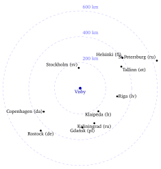
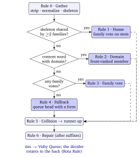
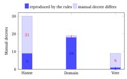
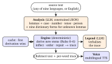
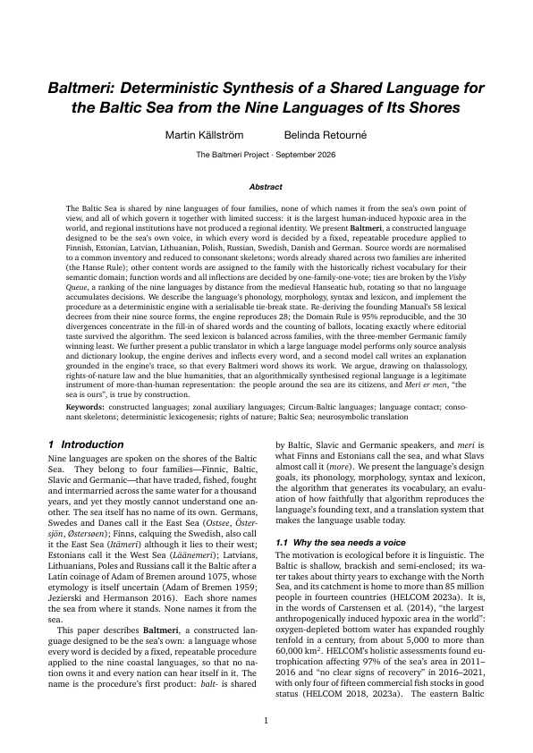

The Baltmeri Project · 2026

Nine languages ring the Baltic Sea and none of them names it from the sea. Baltmeri is a language in which every word is decided by all nine at once, by a fixed and repeatable procedure. Meri er men — the sea is ours.
The Baltic Sea is shared by nine languages of four families, none of which names it from the sea's own point of view, and all of which govern it together with limited success: it is the largest human-induced hypoxic area in the world, and regional institutions have not produced a regional identity. We present Baltmeri, a constructed language designed to be the sea's own voice, in which every word is decided by a fixed, repeatable procedure applied to Finnish, Estonian, Latvian, Lithuanian, Polish, Russian, Swedish, Danish and German.
Source words are normalised to a common inventory and reduced to consonant skeletons; words already shared across two families are inherited (the Hanse Rule); other content words are assigned to the family with the historically richest vocabulary for their semantic domain; function words and all inflections are decided by one-family-one-vote; ties are broken by the Visby Queue, rotating so that no language accumulates decisions. We describe the language's phonology, morphology, syntax and lexicon, and implement the procedure as a deterministic engine with a serialisable tie-break state. Re-deriving the founding Manual's 58 lexical decrees from their nine source forms, the engine reproduces 28; the Domain Rule is 95% reproducible, and the 30 divergences concentrate in the fill-in of shared words and the counting of ballots, locating exactly where editorial taste survived the algorithm.
We further present a public translator in which a large language model performs only source analysis and dictionary lookup, the engine derives and inflects every word, and a second model call writes an explanation grounded in the engine's trace, so that every Baltmeri word shows its work. We argue, drawing on thalassology, rights-of-nature law and the blue humanities, that an algorithmically synthesised regional language is a legitimate instrument of more-than-human representation: the people around the sea are its citizens.
Every Baltmeri word is the output of one procedure run on a concept: a gloss, a part of speech, a semantic domain, and the first dictionary translation in each of the nine languages. The nine forms are normalised, stripped of their citation endings and reduced to consonant skeletons (voicing and palatalisation ignored), so that Danish sild and Polish śledź both become S-L-T and count as the same word.
The rules are then tried in order. If a skeleton is shared by two or more families the concept is a Hanse word and Baltmeri inherits it. Otherwise a content word goes to the family that owns its domain: the sea, fish, weather and landscape to Finnic; body, kinship, colour and farm to Baltic; trade, town, law and abstractions to Germanic; verbs and adjectives of quality to Slavic. Function words and every ending are put to a family vote, one family one vote. If two concepts collide, the later one takes its runner-up. A small set of repair rules removes clusters no coastal speaker would say.

Because the language is a procedure, its founding text can be tested against itself. We gave the engine the nine source forms for each of the Manual's 58 lexical decrees and ran the procedure in the Manual's order. It reproduces 28. The pattern is sharp: where the Manual assigns a word by semantic domain, the engine agrees 18 times out of 19; where a word is shared or voted, the author's hand shows. The 30 divergences fall into four classes, and ten of them are cases where the Manual protected the Finnic character of sea vocabulary against its own Hanse Rule.

The design's central claim is equity between families. Germanic, with three members and by far the most speakers, supplies the fewest winning forms; Baltic, with the fewest speakers, supplies the most.
| Family | Wins | Deciding language | Wins |
|---|---|---|---|
| Baltic | 20 | Polish | 15 |
| Slavic | 18 | Latvian | 14 |
| Finnic | 15 | Estonian | 13 |
| Germanic | 10 | Swedish | 8 |
| Lithuanian · Russian · Danish · Finnish · German | 6 · 3 · 2 · 1 · 1 |
A language no one has spoken needs a way to be spoken. The translator's defining property is that the language model never writes a Baltmeri word. It analyses the source sentence into lemmas with grammatical features and supplies the nine dictionary forms for anything the lexicon does not know; a deterministic engine derives and inflects every word and records a trace; a second model call turns the trace into the “legend” shown beneath each translation. The legend is faithful by construction because it verbalises an executed derivation rather than reasoning about the translation.
New words are coined from the queue state the Manual leaves behind, and a word's first derivation is kept forever, so the lexicon grows without ever changing under anyone's feet.

Type in any of the nine languages or English. Click a word in the output to see the nine forms that voted, who won, and how the tie was broken.
Open the translator in a new tab →
The Manual's closing text, voiced by a multilingual model with no language setting: Baltmeri is not a language it knows, so it is left to decide how nine coastlines sound at once.
Baltmeri er ne glembok meri. Baltmerin vesi er ne müket solne, i talvil meril er jää. Daug kalai plav Baltmerise: räim, sild, tursk i lohi. Peleekhüljei ži saaril i kaljuil, i suvil de odpočiv päivel. Kalajai lov räima sügisl. Vakar de vidil daug hüljei meril. Home me žeglisme Gotlandile, i ja vidsu dzintara rannal. Ja kohu Baltmeria. Meri er zimne, ne glembok, i ne müket solne — ale meri er men.

Baltmeri: Deterministic Synthesis of a Shared Language for the Baltic Sea from the Nine Languages of Its Shores. Martin Källström and Belinda Retourné. The Baltmeri Project, 2026. 19 pages, 90 references.
Sections: introduction and motivation · background (Circum-Baltic contact area, Hanseatic lexicon, zonal constructed languages, computational comparison, the sea as subject) · design goals · source languages and the Visby Queue · phonology and orthography · the synthesis procedure · morphology · syntax · lexicon · evaluation · the translation engine · discussion · appendices with the recipe card, the full seed lexicon with source forms, and the interlingua.
Download the PDF · LaTeX sources · The Manual · Engine decisions
@techreport{kallstrom2026baltmeri,
title = {Baltmeri: Deterministic Synthesis of a Shared Language
for the Baltic Sea from the Nine Languages of Its Shores},
author = {K{\"a}llstr{\"o}m, Martin and Retourn{\'e}, Belinda},
institution = {The Baltmeri Project},
year = {2026},
url = {https://github.com/martinkallstrom/baltmeri-translator}
}